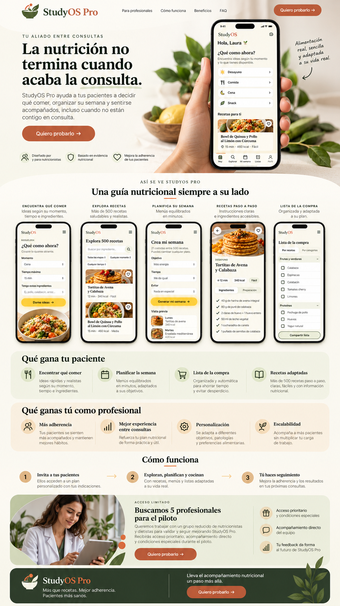
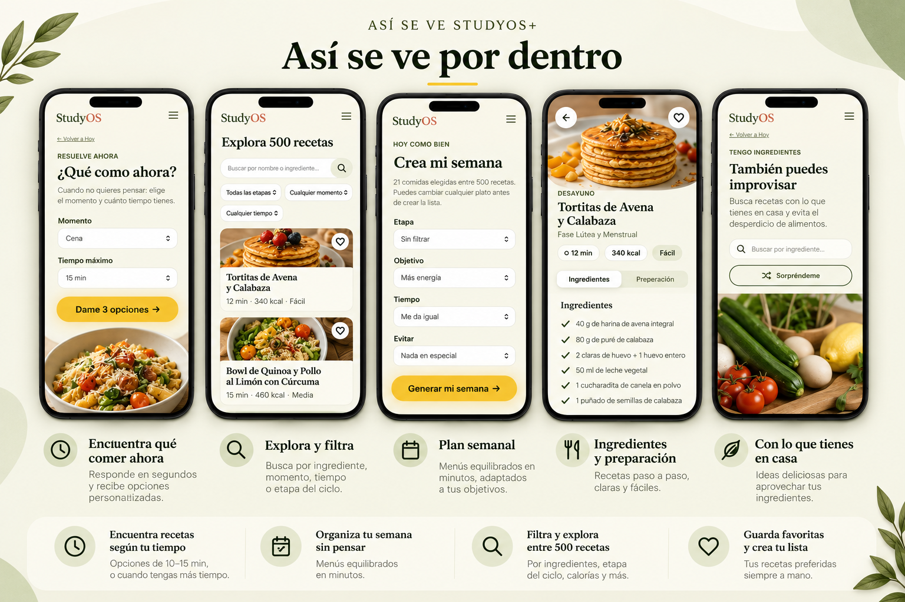

La nutrición no termina cuando acaba la consulta.
StudyOS Pro es una herramienta digital para que tus pacientes encuentren ideas de comida, organicen su semana y tengan recursos prácticos entre consultas.

para el día a día del paciente.
Tu paciente sale de consulta con un plan. Luego llega la vida real.
StudyOS Pro está pensado para cubrir ese espacio práctico entre una visita y la siguiente, sin sustituir tu criterio profesional.
“¿Qué como hoy?”
Ideas realistas según momento, tiempo disponible e ingredientes.
“¿Qué compro?”
Planificación semanal y una lista de compra más organizada.
“¿Qué hago con esto?”
Buscador para aprovechar ingredientes que ya tiene en casa.
“¿Dónde lo miro?”
Un único punto digital para consultar recetas y recursos prácticos.

Ya existe una experiencia funcional.
La versión actual de StudyOS permite explorar recetas, resolver qué comer, organizar la semana y aprovechar ingredientes. El piloto Pro busca validar cómo llevar esa experiencia al entorno profesional.
Invitas al paciente
Le compartes el acceso que preparemos para tu piloto.
El paciente consulta
Explora recetas, usa el recomendador y organiza su semana.
Tú haces seguimiento
StudyOS complementa tu trabajo; no sustituye tus indicaciones ni tu consulta.
Útil para el paciente. Interesante para tu consulta.
Qué recibe tu paciente
- ✓Más de 500 recetasBiblioteca práctica para distintos momentos del día.
- ✓Recomendador rápidoOpciones según momento y tiempo disponible.
- ✓Buscador por ingredientesPara aprovechar lo que ya tiene en casa.
- ✓Plan semanal y listaOrganización en un único espacio.
Qué validamos contigo
- ✓Uso real entre consultasQué funciones utilizan y cuáles sobran.
- ✓Personalización básicaDurante el piloto adaptamos la presentación a tu marca.
- ✓Encaje con tu forma de trabajarQueremos aprender antes de desarrollar un software más complejo.
- ✓Feedback directoLos primeros profesionales influirán en la versión Pro definitiva.
Buscamos 5 profesionales para el piloto.
No queremos construir funciones a ciegas. Queremos probar StudyOS Pro con dietistas-nutricionistas y profesionales de la nutrición, aprender de su uso real y decidir qué merece la pena desarrollar.
Antes de probarlo.
¿Es un software de gestión clínica?
No. Esta primera versión es una herramienta de apoyo con recetas, recomendación y planificación. No gestiona historias clínicas ni diagnósticos.
¿Sustituye el plan del nutricionista?
No. El objetivo es complementar el trabajo profesional y facilitar recursos prácticos entre consultas.
¿Tengo que instalar una app?
No. La experiencia funciona desde navegador y está pensada para móvil.
¿Por qué solo 5 plazas?
Porque en esta fase queremos acompañar cada prueba de cerca y recoger feedback útil antes de escalar.